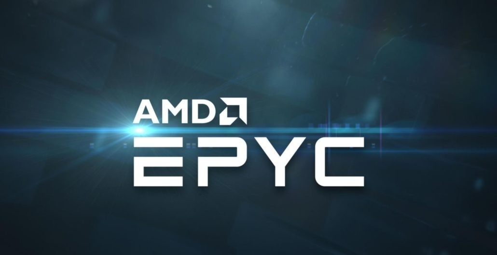
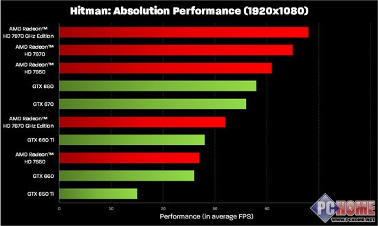

一般来看，AMD的芯片要比英特尔同配置的便宜。如果预算紧张，那么选择一个AMD的CPU可能是最好的主意。不过如果预算价格高于150美元，那么英特尔处理器在整体表现上就会更快更强大。若购买者所居住地区生产AMD芯片，则AMD芯片成本效率会下降。不过英特尔酷睿i5处理器现如今有一个令人心动的价格，约为200美元。AMDFX处理器新推出时价位控制在100美元左右，一旦消费者愿意花大约150美元购买时，就可以赌一赌看看是否真的有所宣称的高性能。用户现在也可以花大约120美元买到一个AMDFX-6300处理器，它不仅性能良好够用，而且足够兼容，还可以节省预算。虽然有许多英特尔酷睿i3的CPU价格低至100美元左右，但是i3的芯片通常如其价格一样廉价。最重要的一点是，一些i3CPU的套接口也和一些高端的酷睿i5和i7芯片上的不兼容，这将会阻碍用户进行系统升级。
CPU有固定的时钟频率，其通常被设置好一个典型的基准值，以确保有一直稳定的最佳性能。为了可以调整CPU时钟频率，用户希望能购买到可以改变数值的CPU。提高CPU工作的频率称为“超频”，其可使CPU的时钟频率高于基准值。AMD芯片为超频配备了超频固态选项，性价比更高，也更便于用户更改设置。而对于英特尔芯片来说，其通常已经固定好了基准时钟频率，无法选择超频，除非用户可以买到一个非固定的CPU。
图像处理器（GPU）的效率是另一个需要注意的地方，因此在挑选一个CPU时考虑GPU效率有时也会很棘手。即便AMD处理器可以帮助用户节省大量的金钱，但如果对CPU有更多的预算，那么更强大的英特尔i5和i7处理器将会是更棒的选择，其优势在于配备有高端显卡。当使用同样的显卡，通过比较一个英特尔芯片和一个AMD芯片在运行应用程序上的快慢时，就可以在帧率和延迟方面有一个真正的、可衡量的差异对比。
当用户在选择AMD和英特尔哪家公司的处理器问题上犹豫时，其实结果却根本没有真正的“正确”答案。因为每个用户对自己电脑的配置都有不同的需求和预算。对于在购买CPU上预算紧张的消费者，AMD的CPU通常是正确的选择，因为相同价位上来看，同样是150美元，AMD的芯片通常比英特尔芯片有更好的性能。不过如果用户手中有更多的钱，想配置有更高端CPU时，英特尔酷睿i5和i7的处理器系列将是更明智的选择。
AMD与因特尔CUP并不是谁差，其实各有各的用处,AMD的游戏能力英特尔赶不上,英特尔的办公能立AMD赶不上,差别不大就流水线工艺不同宽位.但AMD的性价比高,在同价格下，AMD的性价比是比较高，但在高端领域，AMD还不是因特尔对手
Intel太常见到2.8GHz、3.0GHz了，如果是P4 2.8 3.0 甚至3.6 那一代构架问题，intel的频率提升很容易，但是性能很差。导致2.8 3.0的只能和amd k8核心的速龙 3000+ 相比，速龙3000+实际只有2.2左右的频率，当然现在不同了，intel自从把P3M构架改进后出的酷睿系列，频率一般都比AMD的速龙频率低，但是性能一点都不差。 导致曾经的高端速龙一夜降价1000元，所以说cpu 如果是相同构架，主要看主频和缓存前端总线。 如果cpu构架不同，那就要看性能评测了，并非主频高速度就快。AMD ，性价比高，升级容易。英特尔营销广告做的好。
很多人以为AMD处理器发热量大，这点观点和早期AMD处理器发热比较大有关系。AMD的这代处理器对奔腾来说具备这样的特征，再稳定性上都能做到完美，现在的扣肉再任何性能上都能封神，但是现在的事实是AMD的发热 是最小的。但是对于扣肉来说，两家处理器供应商都是世界级的大厂。
这个也是比较早的经验了。AMD处理器的良好超频性也从一个侧面放映出AMD的稳定性不容置疑，都生产服务器用处理器。
这点观点也有不少人这样认为，酷睿也发热不大，AMD再办公上更好些
 CPU跑分手动传送门 